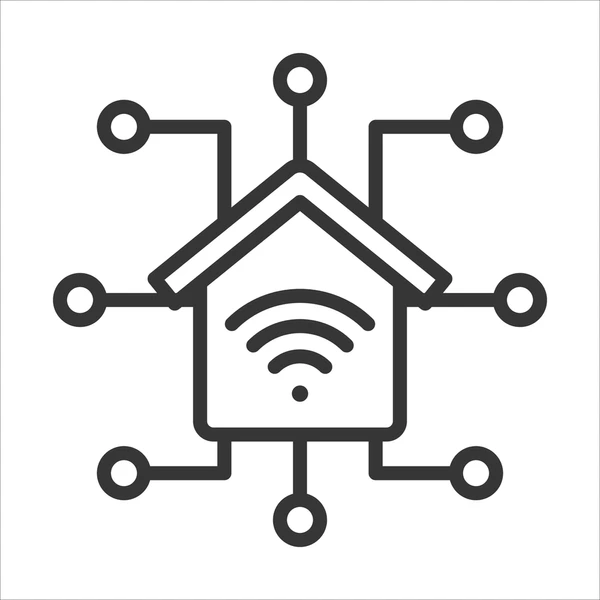

Avances para este semestre

Avance del proyecto Loock-Home
En este cuarto semestre se ha continuado con el desarrollo del proyecto Loock-Home, fortaleciendo nuestro portafolio como la parte física del sistema domótico. En esta etapa se busca mostrar una evolución más completa del prototipo, integrando mejoras en diseño, conectividad y visualización.

Implementación de IoT por capas
La implementación de la tecnología IoT en el proyecto se divide por capas para facilitar la comprensión del funcionamiento del sistema:
Capa física o de percepción
Corresponde a la maqueta, sensores, actuadores y dispositivos electrónicos encargados de captar la información del entorno, como apertura de puertas, movimiento o variables ambientales.
Capa de comunicación
En esta capa se emplea un protocolo de comunicación que permite transmitir en tiempo real la información captada por la maqueta hacia la plataforma digital y los dispositivos móviles.
Capa de aplicación
Es la parte donde el usuario podrá visualizar desde su dispositivo móvil todo lo que sucede en la maqueta, como alertas, estados de sensores y control de accesos, permitiendo una interacción remota con el sistema.
Meta del semestre
La meta principal es lograr que todo lo que ocurra en la maqueta pueda ser supervisado desde un dispositivo móvil, mediante la comunicación entre sensores, hardware y plataforma web, evidenciando así la implementación real de la domótica y el IoT
Nueva version de maqueta
Desarrollo de la maqueta
Actualmente nos encontramos trabajando en la segunda versión de la maqueta de Loock-Home, enfocándonos en mejorar el diseño, la distribución del cableado, la ubicación de los sensores y los materiales de construcción. Nuestro objetivo es lograr un prototipo más funcional que permita evidenciar de manera real la integración de la domótica y la tecnología IoT en el hogar.
Esta maqueta esta creada en un material aglomerado (MDF) con bisagras de pulgada (1in)
Documento
Speech 4
Link Speech
https://youtube.com/shorts/6u3QToCl_Rg?si=YJPb0CPmcKgQw9rv